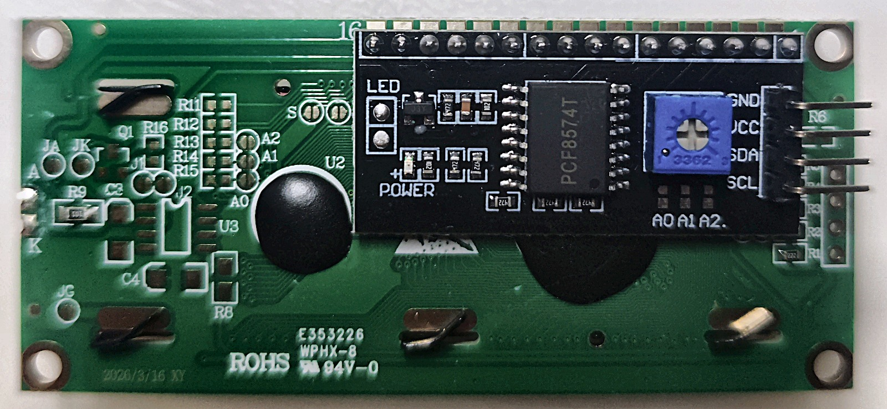
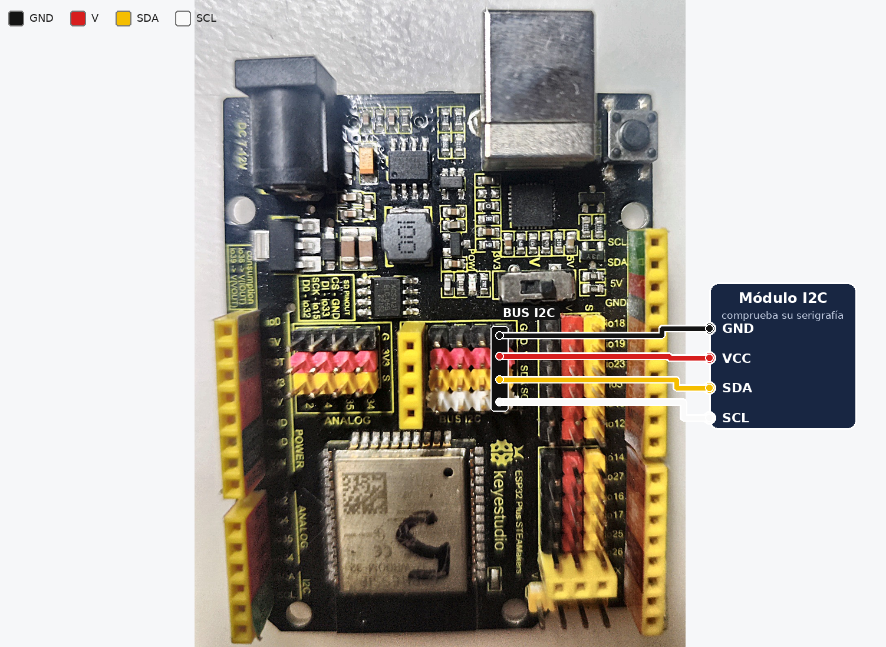
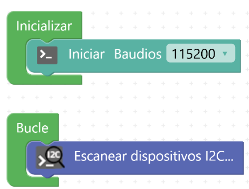
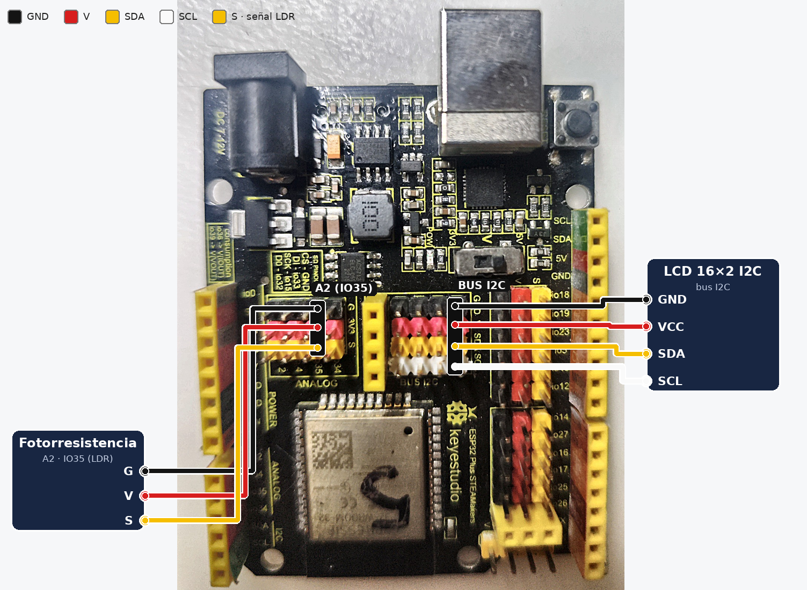
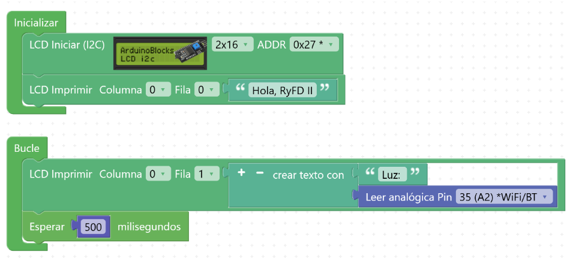
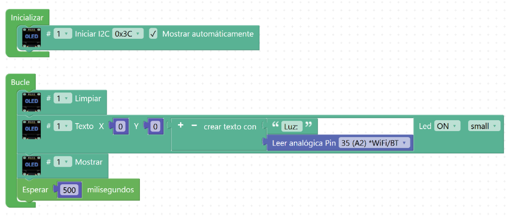
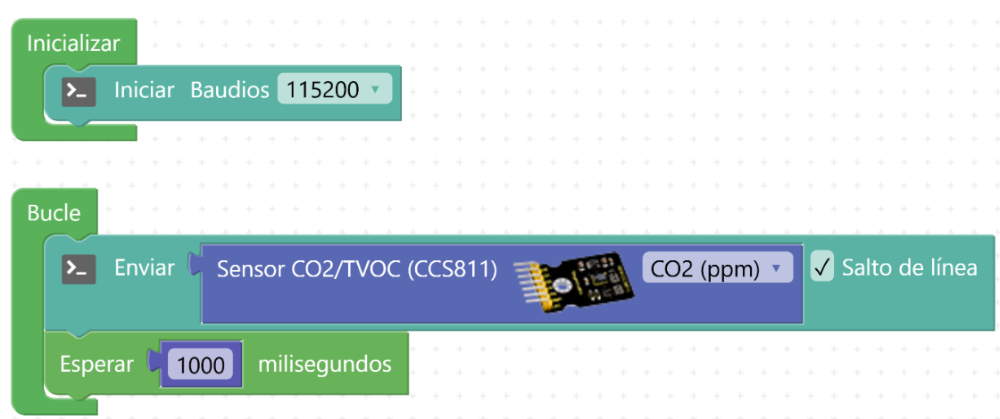
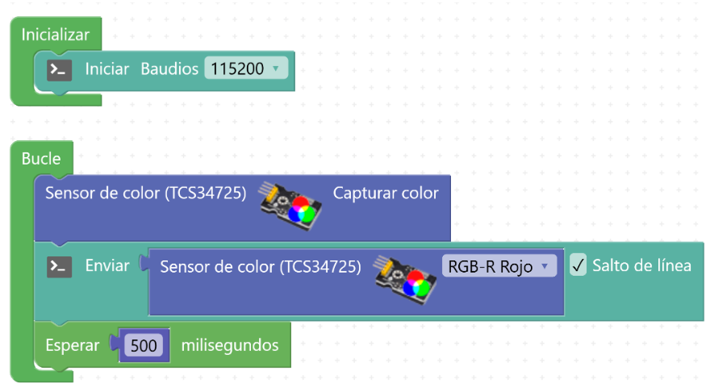

N2b I2C y sensores especiales
Algunos módulos no se conectan con un pin de señal, sino por el bus I2C: pantallas, sensores de gases, de color… Son bloques que ya vienen preparados en el editor, pero con una condición: hay que conocer su dirección. Con este nivel cierras el repaso y quedas listo para la placa de IA.
🧵 I2C: dos hilos para muchos dispositivos
Los sensores y las pantallas que has usado hasta ahora ocupaban un pin cada uno. El bus I2C resuelve eso con dos hilos de datos compartidos por todos los dispositivos: SDA (datos) y SCL (reloj), más alimentación y masa. Cada dispositivo tiene una dirección propia, que es como su número de casa, y la placa se dirige a él por ella. Por eso pueden convivir una pantalla, un sensor de color y otro de gases en los mismos cuatro hilos.

| Dispositivo | Dirección habitual | Comentario |
|---|---|---|
| LCD 16×2 con adaptador PCF8574 | 0x27 (a veces 0x3F) | Depende del chip y de los puentes del adaptador. |
| Pantalla OLED SSD1306 | 0x3C (a veces 0x3D) | El bloque del editor propone 0x3C. |
| Sensor de color TCS34725 | 0x29 | Fija en el chip. |
| Sensor de CO₂ y COV CCS811 | 0x5A (o 0x5B) | Según el pin de dirección del módulo. |


En la placa, los conectores I2C agrupan GND, V, SDA y SCL en un mismo bloque. Conecta cada pin del módulo con el de su mismo nombre: SDA con SDA y SCL con SCL, sin cruzarlos. Usa para ello el rótulo del módulo y no el color del cable.
🖥️ Pantalla LCD
La LCD de 16 columnas y 2 filas muestra texto. Se programa indicando columna y fila y el texto que quieres escribir, que puede unir un mensaje fijo con un valor leído de un sensor.


- Dirección. El bloque «LCD Iniciar (I2C)» propone 0x20. Si el escáner te da 0x27 (o 0x3F), cámbiala; si no, la pantalla no responderá.
- Contraste. Si la pantalla se enciende pero solo ves cuadros o nada, gira con un destornillador pequeño el potenciómetro azul del adaptador.
- Decimales. Al unir el texto con una lectura analógica aparece un valor con decimales (por ejemplo «Luz: 1523.00»).
- Borrar. Para actualizar una línea más corta, escribe espacios o usa «LCD Limpiar» antes de escribir.
🔳 Pantalla OLED
La OLED es una pantalla gráfica: además de texto puede dibujar píxeles, líneas, rectángulos y círculos. Cada elemento se dibuja con la posición X, Y en píxeles, y la imagen no cambia en la pantalla hasta que se ejecuta «Mostrar» (o hasta que se activa «Mostrar automáticamente» en el bloque de inicio).

🌫️ Sensor de CO₂: CCS811
El módulo CCS811 mide compuestos orgánicos volátiles (COV) y, a partir de ellos, calcula un equivalente de CO₂ (eCO₂, en ppm) y un valor de TVOC. Se conecta por I2C y el editor tiene un bloque propio con un desplegable para elegir qué valor devolver.
Montaje. Igual que el módulo I2C genérico de la tarjeta anterior: GND, V, SDA y SCL al bus I2C de la placa. Algunos módulos CCS811 tienen más pines y puede ser necesario llevar el pin WAKE a GND para que respondan: comprueba la serigrafía y la hoja de tu módulo antes de enchufar.

Un análisis con sentido: anota la lectura con la ventana abierta, con la clase llena y con la clase cerrada durante un rato. Lo esperable es que suba con la ocupación; si no lo hace, discute por qué.
🎨 Sensor de color: TCS34725
El sensor de color mide la luz que le llega en tres componentes, rojo, verde y azul, y un canal sin filtro. El bloque funciona en dos pasos: primero «Capturar color», que hace la medida, y después se lee el valor que interese con el bloque de valor (R, G o B, entre otros, según el desplegable).
Montaje. Igual que el módulo I2C genérico: GND, V, SDA y SCL al bus I2C. Si el módulo tiene pines extra (por ejemplo, para su LED de iluminación), mira su serigrafía antes de conectar.

- Siempre captura antes de leer. Sin «Capturar color», el valor es el de la medida anterior.
- La luz ambiente importa. Mide siempre con la misma iluminación y a la misma distancia del objeto, o los números no se pueden comparar.
- Calibra. Mide un papel blanco y uno negro: son tus valores de referencia.
🔁 Retos
Dirección confirmada
Escanea el bus I2C, anota la dirección de cada dispositivo y comprueba que coincide con la de la tabla.
Termómetro de luz
Muestra en la OLED o en la LCD el nivel de luz con un texto y una barra que crezca con la medida.
Clasificador de color
Con el sensor de color, haz que un LED rojo, verde o azul se encienda según el color del objeto que le acerques.
Conserva en el porfolio: lista de direcciones I2C de tu montaje, foto de la pantalla funcionando y tabla de medidas del sensor que hayas usado.
✅ Comprueba lo que has aprendido
1. Una pantalla I2C no muestra nada. ¿Qué haces primero?
2. El sensor CCS811 da 400 ppm nada más encenderlo. ¿Qué haces?
3. En el sensor de color, ¿qué bloque va primero?